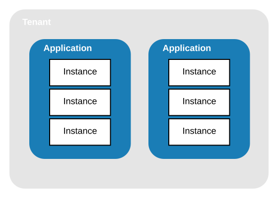
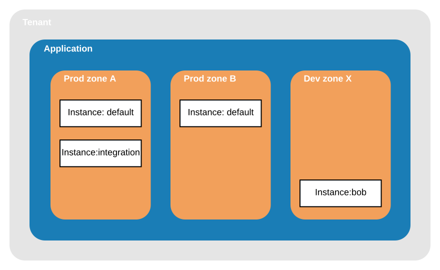

When registering for Vespa Cloud, a tenant is created. Tenant is the billable unit, and most often an organization.
A tenant has one more more applications with one or more instances:
Instances are used for different use cases, and are deployed to a set of zones - example:
The Application has a "default" instance serving queries from two production zones. It has an "integration" instance with another dataset, used for other applications to interface a production-like, stable interface. Finally, a developer has deployed the "bob" instance to a dev zone to further develop plugin code.
Deployments to production zones are specified in deployment.xml. Deployments to manual zones like dev and perf are normally done directly from a developer computer for rapid code and config development. Read more in Automated deployments.
The service configuration is specified in services.xml and is composed of individually sized clusters. A cluster is deployed to a set of nodes with resources specified.